Implementando um jogador para Liga4
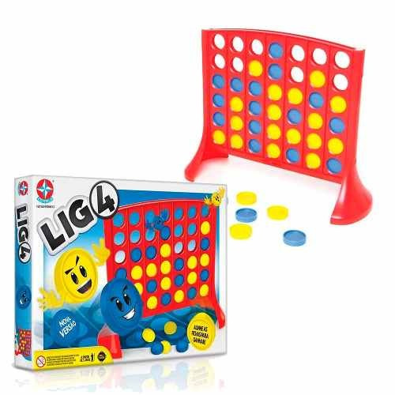
Fabrício J. Barth
Formado em Ciência da Computação e com Doutorado em Engenharia Elétrica pela Universidade de São Paulo. Tem desenvolvido diversos projetos relacionados com Aprendizagem de Máquina e Inteligência Artificial nas áreas financeira, Internet, segurança pública, educação e recursos humanos desde 2003. Atualmente ocupa a posição de docente no Insper.
Objetivos da atividade
Na atividade de hoje você irá:
- ver um exemplo de jogo de Connect-4 implementando usando pygame.
- compreender de uma forma introdutória como utilizar o algoritmo Min-Max no desenvolvimento de robô capaz de jogar Connect-4.
Todo o material utilizado nesta atividade está disponível em https://fbarth.net.br/Connect4-Python/.
Jogando entre humanos
Vamos jogar um pouco?
cd src
python connect4.py
cd src
python connect4.py
- Deu para entender como o jogo funciona?
- Você achou difícil ganhar do seu adversário?
- Que capacidades uma pessoa precisa ter para jogar este jogo?
Implementando um jogador
Na linha 114 e 115 do arquivo connect4.py é possível ver o seguinte trecho de código:
posx = event.pos[0]
col = int(math.floor(posx/SQUARESIZE))
Precisamos trocar este trecho por algo como:
col = player.move(player_code, board)
Sendo que o player pode ser uma instância da classe:
class MeuJogador(Player):
def name(self):
return "Meu Jogador super simples"
def move(self, player_code, board):
# TODO lógica para escolher uma coluna
return col
class MeuJogador(Player):
def name(self):
return "Meu Jogador super simples"
def move(self, player_code, board):
# TODO lógica para escolher uma coluna
return col
Implementando um robô super simples
Qual é o robô mais simples que podemos implementar?
Implementando um robô super simples
Criando um jogador que joga de forma aleatória!
from random import randint
from Player import Player
class RandomPlayer(Player):
def name(self):
return "Random"
#
# retorna a coluna onde a bola será jogada
#
def move(self, player_code, board, depth):
return randint(0, 6)
python connect4_with_ai.py random
Vamos implementar algo um pouco mais inteligente?
- O que seria uma robô mais "inteligente"?
- Que abordagens podemos utilizar para implementar um robô mais inteligente?
Por onde eu começo?
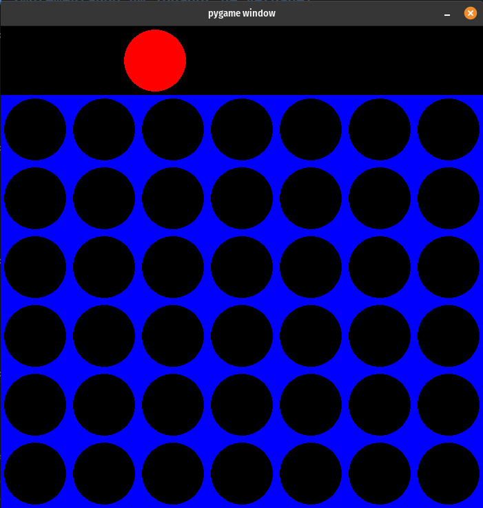
O que eu faço agora?
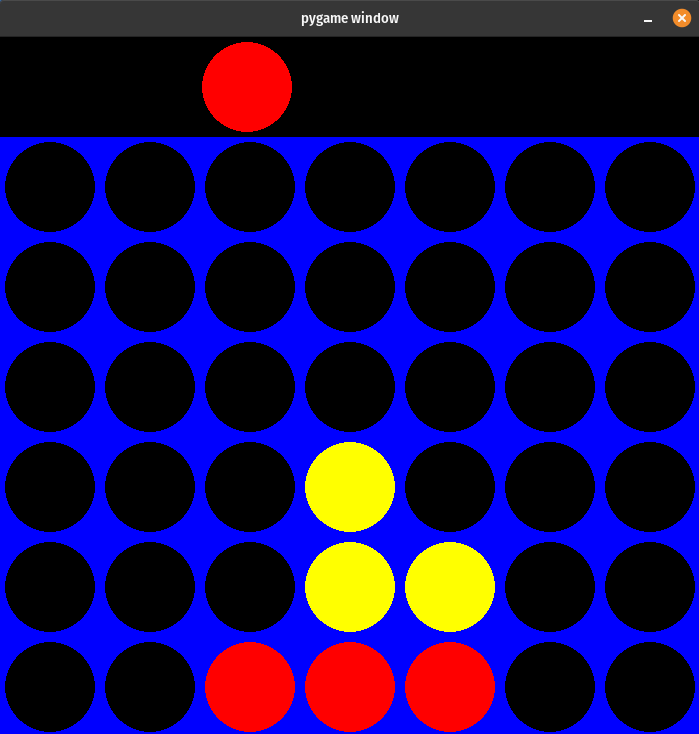
E agora?
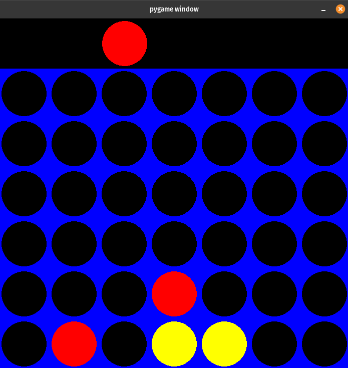
Qual é a melhor opção?
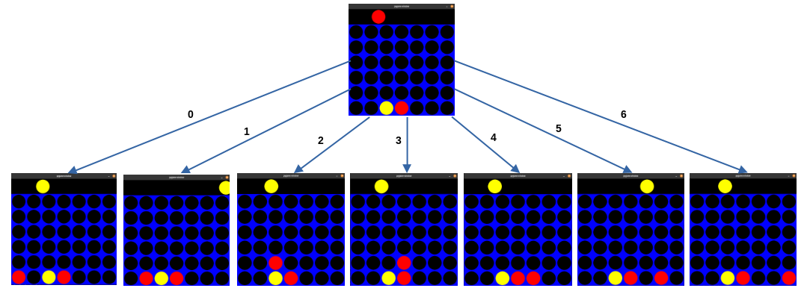
É necessário ter uma função qualquer na implementação que diga qual é a melhor ação. Por exemplo, dizendo qual é o estado que tem maior utilidade para o nosso robô.
Definindo algumas verificações
- é um movimento vencedor?
- está dominando o centro?
- está criando oportunidades na horizontal?
- está criando oportunidades na vertical?
- está criando oportunidades na diagonal?
python connect4_with_ai.py flat
Humanos versus um robô melhorado
-
Agora temos um robô melhor que o robô aleatório. No entanto, este ainda é um robô que não consegue vencer na maioria das vezes.
-
O que podemos fazer para melhorar o desempenho do robô?
Implementando um robô mais inteligente
Considere o seguinte estado onde quem deve jogar é o jogador vermelho:
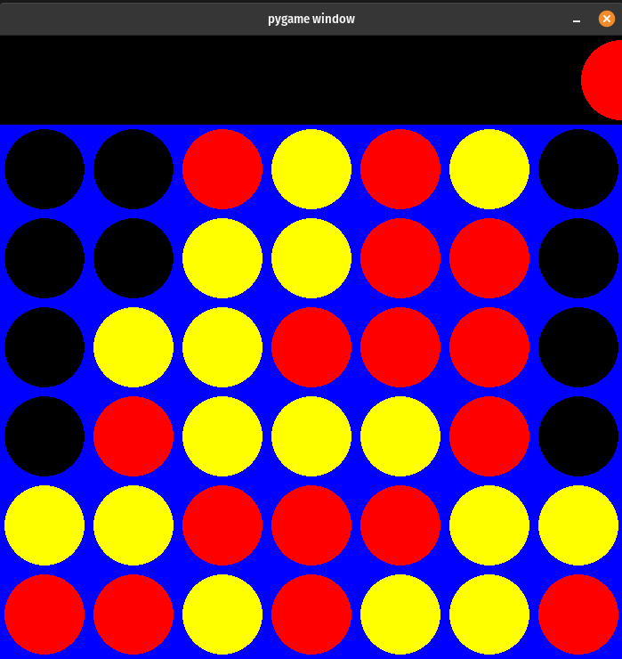
Quais são as posições que o jogador vermelho pode jogar?
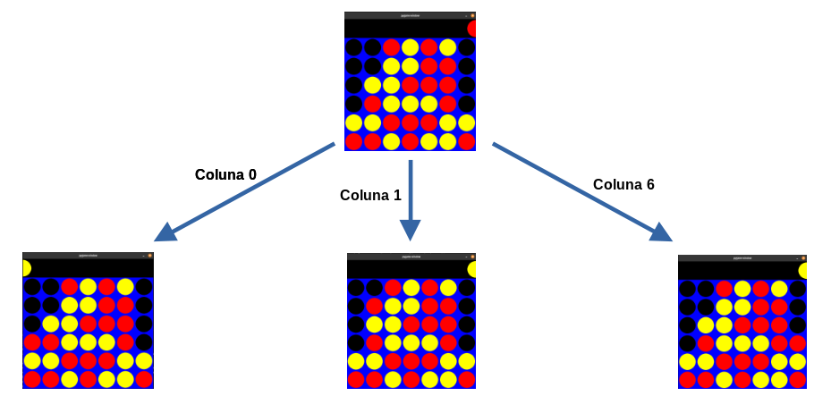
Qual é a melhor jogada?
Para responder esta pergunta o meu robô teria que analisar as próximas jogadas. Ou seja, as jogadas do seu adversário.
Andando um pouco mais na árvore
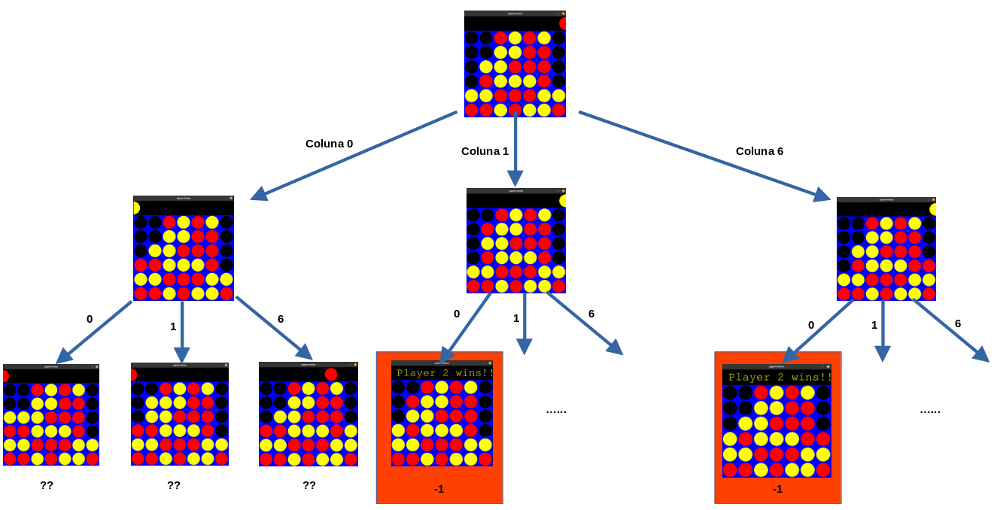
Andando um pouco, pouco... mais na árvore
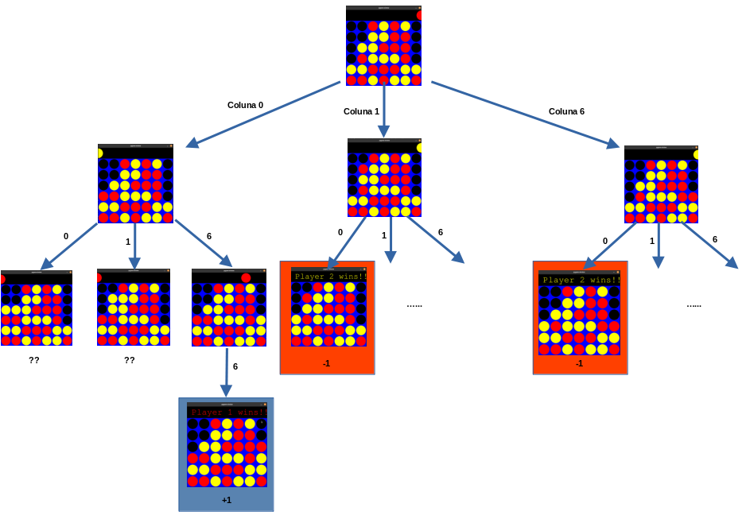
Com base nas informações que você tem agora...
Qual coluna o robô deve escolher quando estiver no estado abaixo?
Algoritmo Min-Max
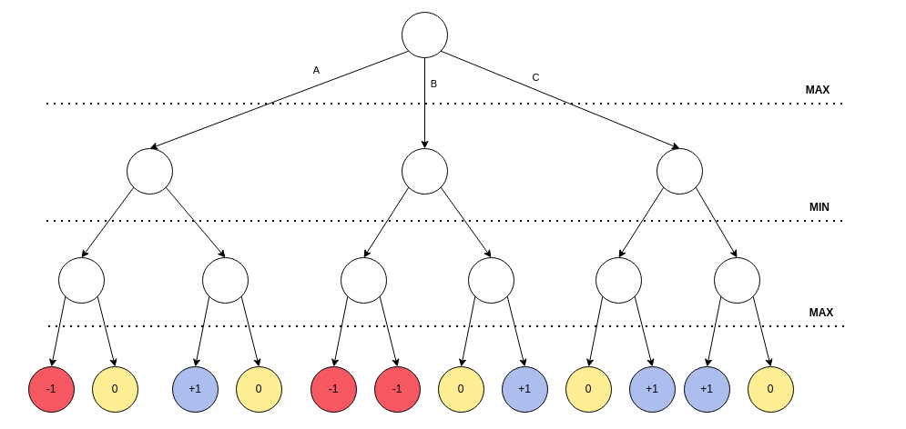
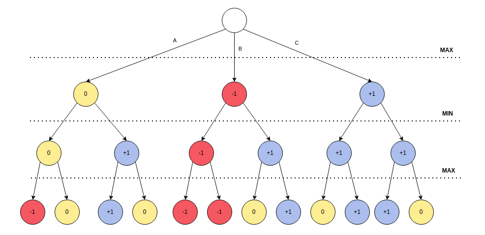
Qual ação o robô deve escolher?
Agora temos um robô vencedor? Vamos testar?
python connect4_with_ai.py complete
O que aconteceu??
Algoritmo Min-Max com profundidade \(p\)
E se limitarmos a busca até uma determinada profundidade \(p\)? Por exemplo, no caso abaixo em \(p=2\)?
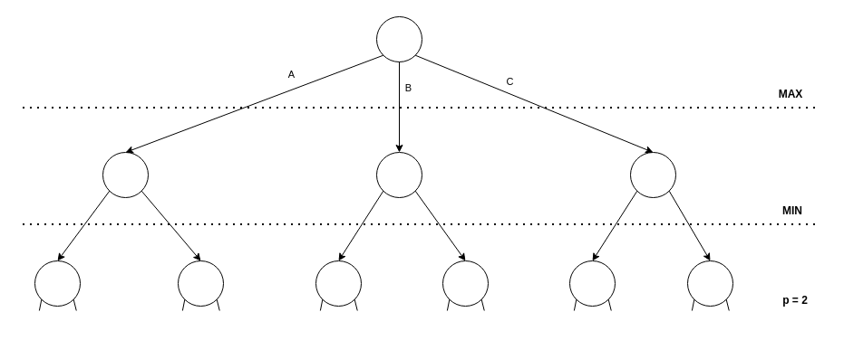
O que está faltando?
Função de utilidade
-
A ideia é substituir a avaliação de estados terminais pela avaliação de estados intermediários.
-
A função de avaliação deve retornar um valor alto para estados que tem uma utilidade maior para o nosso robô e valores baixos para estados que tem um utilidade menor.
Humano versus Min-Max com limite de profundidade
Vamos testar o desempenho de um Min-Max com profundidade 1, 3, 5 e 7?
python connect4_with_ai.py minmax 1
python connect4_with_ai.py minmax 3
python connect4_with_ai.py minmax 5
python connect4_with_ai.py minmax 7
Quais foram as diferenças observadas?
- Teve alguma diferença em termos de tempo de processamento?
- Teve alguma diferença em termos de desempenho?
- Alguma das configurações chega a ter um desempenho similar ao de um humano?
Máquina contra Máquina
Será que um jogador com min-max pode perder de um jogador aleatório?
python connect4_ai_versus_ai.py random 0 minmax 5
E se usarmos um minmax com profundidade igual a 1?
python connect4_ai_versus_ai.py random 0 minmax 1
E se jogarmos min-max contra min-max?
Com profundidades iguais:
python connect4_ai_versus_ai.py minmax 5 minmax 5
Com profundidades diferentes:
python connect4_ai_versus_ai.py minmax 1 minmax 5
Questões gerais
-
Será que uma pessoa pode aperfeiçoar o seu conhecimento sobre Liga4 jogando contra máquinas?
-
Será que uma pessoa pode aperfeiçoar o seu conhecimento sobre Liga4 estudando partidas feitas por duas máquinas?
-
Será que é possível uma máquina aprender a jogar Liga4 jogando contra uma outra máquina que sabe Liga4?
Questões gerais
-
Será que uma pessoa pode aperfeiçoar o seu conhecimento sobre Liga4 jogando contra máquinas?

-
Será que uma pessoa pode aperfeiçoar o seu conhecimento sobre Liga4 estudando partidas feitas por duas máquinas?

-
Será que é possível uma máquina aprender a jogar Liga4 jogando contra uma outra máquina que sabe Liga4?
Um pouco de história e tendências
Origens
-
Claude Shannon. Programming a Computer for Playing Chess. Philosophical Magazine, Ser.7, Vol. 41, No. 314 - March 1950. Uma proposta de uso do algoritmo Min Max no jogo de Xadrez.
-
Claude Shannon cita neste artigo o livro publicado por John von Neumann e Oskar Morgenstern: Theory of Games and Economic Behavior publicado em 1944.
-
John von Neumann cita no seu livro as origens da ideia de Min Max: Waldegrave (1713) Minmax solution of a 2-person, zero-sum game, reported in a letter from P. de Montmort to N. Bernouilli, transl, and with comments by H. W. Kuhin in W. J. Baurnol and Goldfeld (eds.), Precusors of Mathenatical Economics.
Deep Blue versus Garry Kasparov
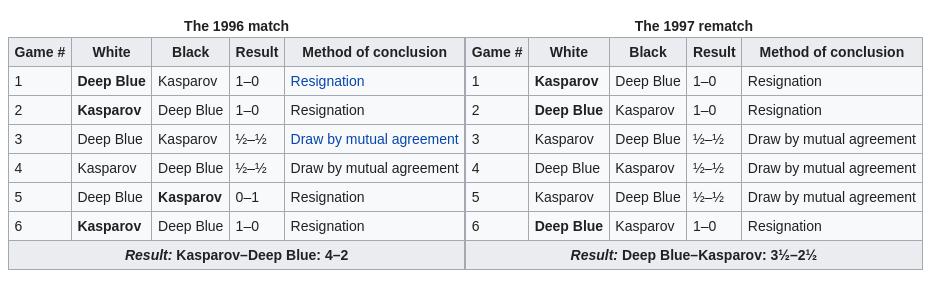
- O DeepBlue fazia uso do algoritmo MinMax com poda alpha-beta.
- A solução tinha 256 processadores dedicados para a tarefa.
- Examinava em torno de 30 bilhões de movimentos por minuto.
- A profundidade geralmente era de 13. No entanto, em determinadas situações podia chegar até 30.
-
Para fazer a poda da árvore ou alongar o caminho de busca, a solução fazia uso de uma base de jogos históricos de Xadrez. Com isto era possível determinar o valor de um estado sem continuar a busca.
- Deep Blue - Down the Rabbit Hole: um vídeo um tanto quanto interessante sobre o assunto com vários detalhes que são difíceis de encontrar em outras fontes.
O que mudou de Shannon até o Deep Blue?
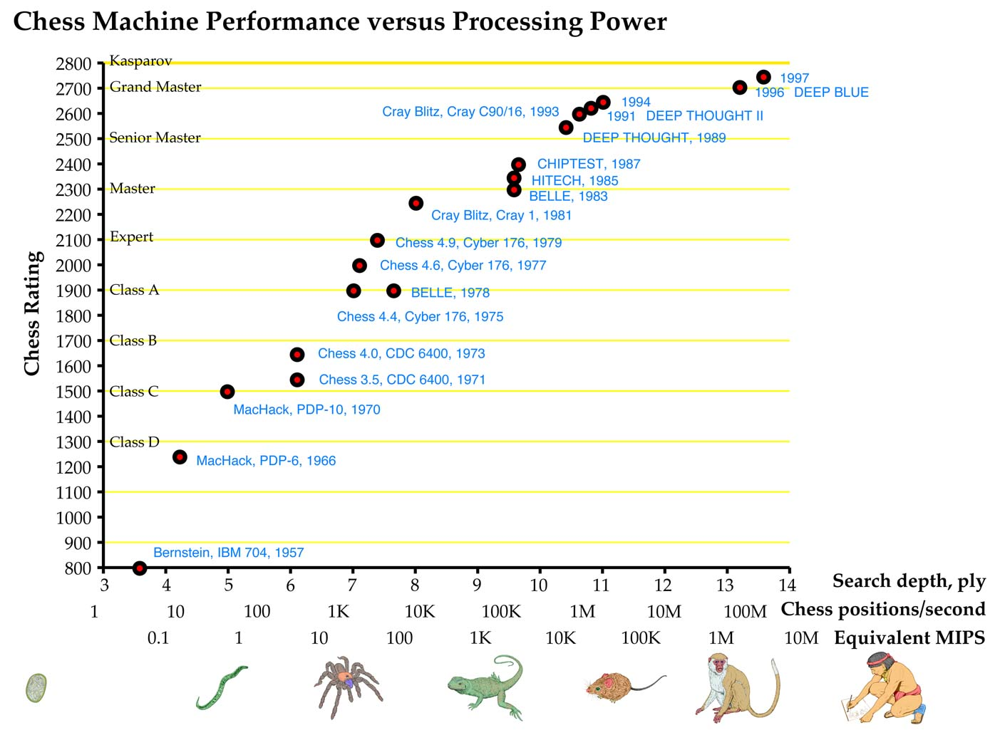
O avanço no jogo de xadrez parou depois do Deep Blue?
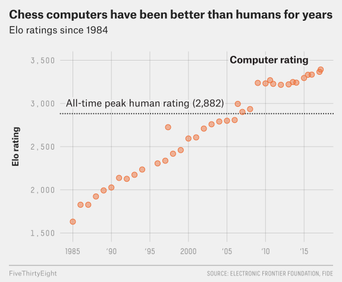
AlphaZero
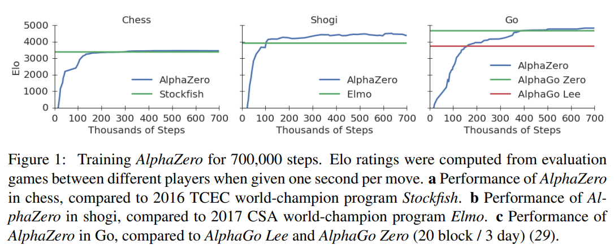
Impactos
-
M. Sadler, N. Regan, e G. Kasparov, Game Changer: AlphaZero’s Groundbreaking Chess Strategies and the Promise of AI. New in Chess, 2019.
-
N. Tomasev, U. Paquet, D. Hassabis, e V. Kramnik, “Assessing Game Balance with AlphaZero: Exploring Alternative Rule Sets in Chess”, CoRR, vol. abs/2009.04374, 2020, [Online]. Disponível em: https://arxiv.org/abs/2009.04374
Próximas atividades e referências
-
Códigos, textos, roteiro de exercícios e referências podem ser obtidas no link http://fbarth.net.br/Connect4-Python/
-
Sugiro fazer o fork ou clone do projeto https://github.com/fbarth/Connect4-Python e seguir as orientações que estão em http://fbarth.net.br/Connect4-Python/configuracao/.